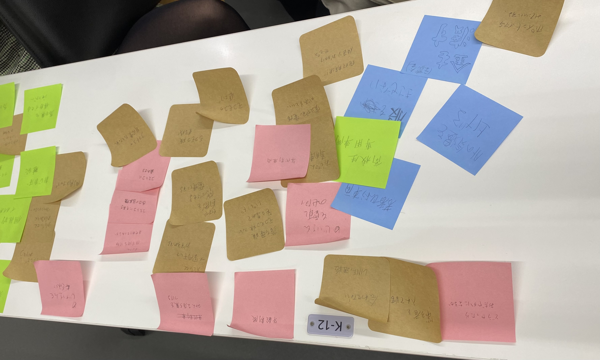

Design for others/ 紅葉パス
取り組む問題
ある日、電車に乗っていると服に落ち葉をつけたお年寄が乗っていた。
その人は電車を降りる際他の人をのけながら降りて行き、他態度も良くなかった。
浮上した問題は、電車で起こりうる他の年代からの迷惑、不安を減らすこと。
この問題解決はお年寄りも若い人も気兼ねなく席に座れることにも繋がる可能性があります。
解決方法は電車の号車を年代別に分ける方法です。

完成品と使用写真
説明
前提として制作したカードにICチップとパスモとしての機能が入っているていで話します。
年代別に発行されたこのカードを持って改札を通り、その際あらかじめ決まっている号車が指定される仕組みです。
柄はお年寄りについていた落ち葉から持ってきました。
使用機材
PC
レーザーカッター